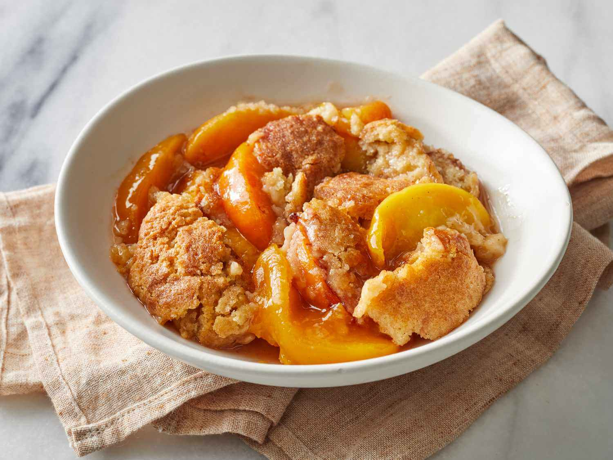
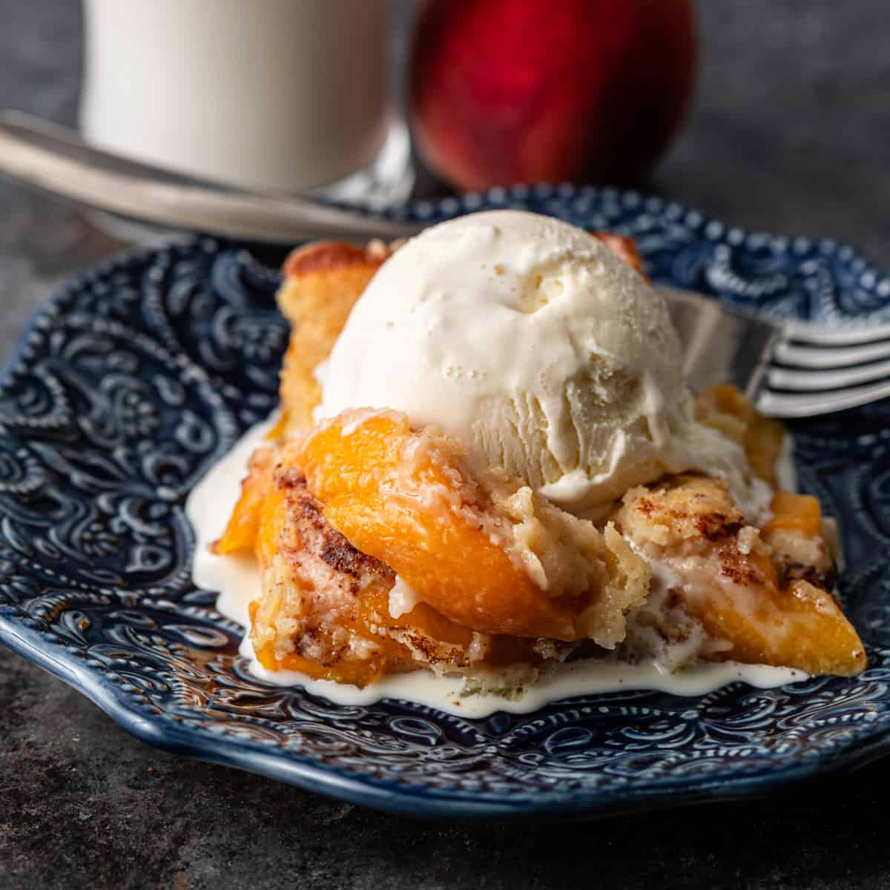

|
 |
Peach cobbler is a classic baked dessert consisting of sweetened and spiced peaches along with a golden brown biscuit-like crust/coating. This dish originates from the British colonies of North America around 1839. Even though it originates from the British colonies it has become a staple in black cuisine and gained its popularity as a Southern comfort food. |

Prep time: 15 Mins
Cooking time: 40 Mins
Recipe by Lauren Allen